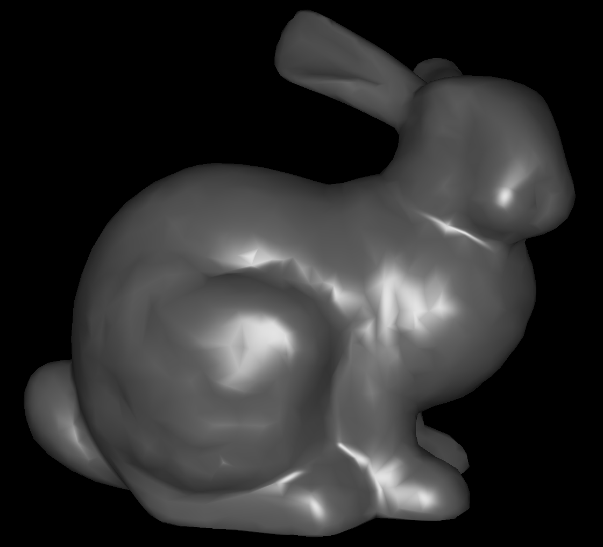
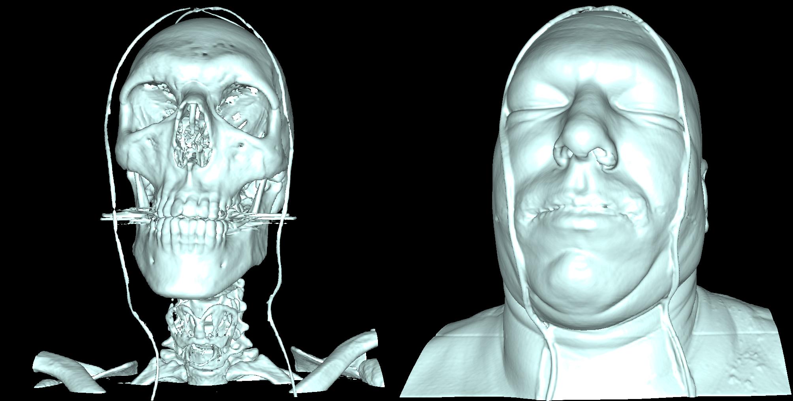
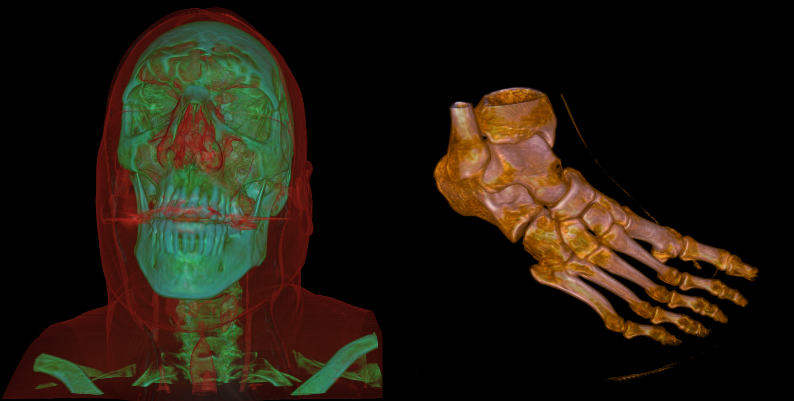
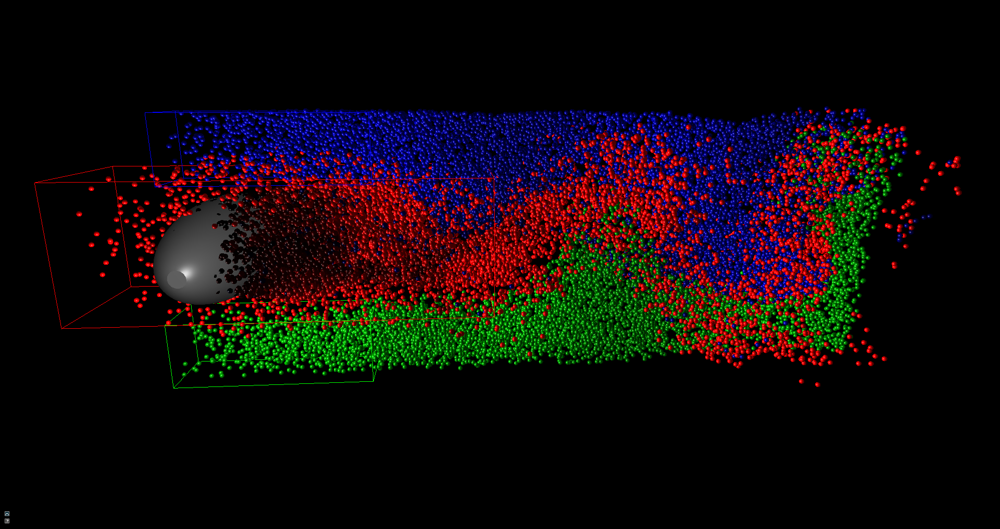
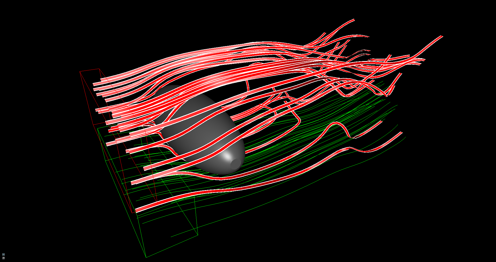

Overview
This tool was developed by me and another student during this practical university course. It was written in C++ and the rendering was implemented using DirectX 11.
Some of the features we implemented were:
- mesh rendering
- iso surface rendering
- direct volume rendering
- rendering of metric scalar fields from vector fields
- arrow glyph rendering
- particle advection and rendering
- stream lines, ribbons rendering
- Oculus rift support
Details
Mesh Rendering
We can load ply 3D mesh files and render them. For this we use simple phong lighting where the user can specify the objects color.
Iso Surface Rendering
We use Raycasting to render the surface for a user defined iso value. The ray marching is implemented by drawing a simple cube and computing the entry and exit points of the rays. The 3D Texture containing the data is sampled with a fixed step size to find the intersection point of the ray with the iso value.
To improve the precision of the ray marching we perform a binary search after we found the iso value. Using central differences we calculate the surface normals for each point our rays hit. With this we can use phong lighting on the iso surface. The results of the rendering can be seen below. In this case a human head with different iso values is rendered. With this it is possible to show the skull or the whole head.
Direct Volume Rendering
Similiar to iso surface rendering we use the same ray marching approach for direct volume rendering. However instead of defining a single iso value and stopping the ray at this intersection we use a transfer function to determine which values add to the overall color At each grid point along the ray we sample this transfer functions to get a value at this point. These values are accumulated until the alpha value is close to one or if we reached the end of the volume.
The major advantage in comparison to the iso surface rendering is the control the user has over the rendering. In comparison to the iso surface images it is possible to display the skull and the head at the same time.
rendering of metric scalar fields from vector fields
For the iso surface rendering and direct volume rendering the surfaces are determined by a single value like the density. When using vector fields as an input for our renderer we have to determine which how to interpret the data provided.
We perform different calculations on the vector data like velocity and vorticity magnitudes or the divergence.
We also implemented support for time dependent data by interpolating the values at the current time step between time slices of the scalar and vector texture data.
arrow glyph rendering
Another way to display the computed metric values is through arrow glyphs. We use the geometry shader to create the arrow glyphs based on the magnitude and direction of the data.
The axis and position of the arrow glyph slice can be changed by the user.
particle advection and rendering
To improve the display of the overall movement in the time dependent data we use particles computed on the GPU. The user can place probe volumes in the data sets that will emit particles into the scene. Parameters like particle size, color, lifetime and the amount can be controlled by the user
The particles are advected during their lifetime based on the values of the vector field. For the rendering we implemented two different ways: The simplest one is just rendering the particles as point primitives at their calculated positions. The visually more appealing version is using billboards. We use the geometry shader to create quads around the particle positions and calculate a sphere based on camera distance and position which is then used to perform lighting calculations
stream lines, ribbons rendering
Besides the advection of particles we also allow for the calculation of stream lines and ribbons. Both of them can be rendered as simple line lists with varying colors based on the magnitude of the velocity
The stream lines can also be rendered as tubes. Similar to the rendering of the particles we use the geometry shader to create billboards and compute the position of the resulting geometry for the lighting analytically.
The ribbons can be rendered out of multiple lines and then connected to better visualize the movement of the field.
Oculus rift support
For the final presentation we decided to add Oculus Rift support to our application. In comparison to my bachelor thesis this proved to be quite easy because the SDK for Oculus is taking care of almost everything now. However we had to be careful to always use the correct values for our projections because a lot of our rendering is based on this.